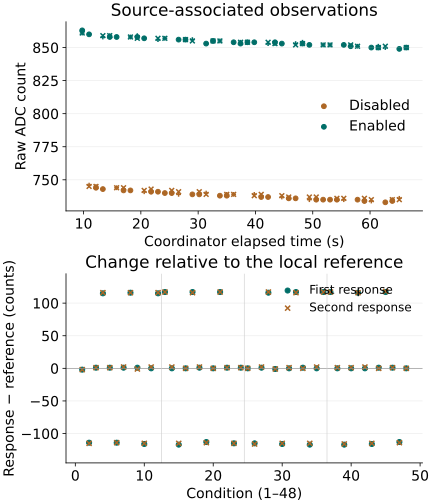

Question and rationale
Does changing the internal temperature-sensor enable control produce a repeatable change in commanded ADC observations, compared with writing the same control value? Does the response depend on the interval between intervention and acquisition?
The two arrival-boundary boots established a usable local timing and recording capability while leaving the source unchanged. This experiment intervenes on a documented internal source connection. It advances the question of controllable physical-state establishment toward Seigsit creation; the two source-enable settings are apparatus controls and do not define Seigsit states or its layers.
Method and controls
Four blocks each contain active-to-active, active-to-inactive, inactive-to-inactive and inactive-to-active source-control writes at added delays of 0, 100 and 1,000 microseconds. Odd blocks use that order with ascending delays; even blocks reverse both. Each transition/delay combination occurs four times: 48 conditions in total. This is a fixed counterbalanced schedule.
Before each condition, establish its reference source setting, wait at least 1,000 microseconds and check the stopped converter, channel 4, zero divider, disabled empty queue and disabled ADC interrupts. A compact SEIGRASM operation then performs one reference conversion; one source-control write, including unchanged-source controls; the added wait; one untriggered RESULT read; two subsequent commanded conversions; and a final queue-status read. Each command is guarded and followed by readiness, RESULT and CS observations. All 16 accesses execute without an intervening SD transaction.
All executable streams are unchanged from the preceding preparation. New operation descriptors select the source-control interventions using existing authored SEIGRASM instructions. Every access records its preceding, requested and following values, status, read/write counts and counter interval. Completed failures enter guarded restoration; an unresponsive bus or recording failure can prevent that restoration.
The RP1 specification identifies the internal ADC source. The pinned vendor register reference identifies channel 4 and TS_EN. The reference supplies register information only. Disabled-source potential is unspecified; no reading is assigned a ground-voltage or calibrated temperature meaning. Entry firmware, processor execution, SD transport and retained bridge configuration remain apparatus dependencies.
Assessment fixed before return
Require identity-bound recording and inspect every control, command, error flag and restoration result. Within each block and delay, compare source changes with the corresponding unchanged-source control. Retain individual references and both subsequent readings, their differences, actual timing, order, drift and any errors. Compare the untriggered read with its reference. No sign, voltage, band separation or minimum effect was prescribed.
Equal or changing values, successful command issuance and readiness alone cannot independently establish analog conversion freshness. A source-associated response supports investigation of controllability, settling and range. It does not by itself establish six calibrated states, physical Seigsit creation or transfer, or applicability to another cluster.
Preparation and acquisition
Preparation BAFF288B3065 passed 38 supplied-response execution and packaging checks. Installation verified 4,096 chunks and two full readbacks before ejection. The prescribed powered allowance was three minutes. The returned journal records 69.867212 seconds from coordinator entry to its terminal snapshot, excluding loading and the terminal record's write/readback. The capture does not independently measure total powered duration.
Results
All 1,792 records, 337 operations, 48 conditions and 144 commanded conversions completed. Every source-control readback matched. No conversion error, sticky error or admission failure was reported. All 48 untriggered RESULT reads retained their local reference. Subsequent commanded observations changed with the source control in every activation and deactivation condition.
| Source write | First response | Second response |
|---|---|---|
| Active unchanged | −2 to +1 | −2 to +1 |
| Deactivate | −117 to −113 | −116 to −114 |
| Inactive unchanged | 0 to +1 | +1 to +2 |
| Activate | +115 to +117 | +116 to +118 |
Comparing each changed-source difference with its same-block, same-delay unchanged-source difference preserves the separation: deactivation contrasts span −118 to −112 counts for the first response and −117 to −113 for the second; activation contrasts span +114 to +117 for both. These paired contrasts retain the predeclared local-reference comparison; they are not calibration corrections.

Drift and observation delay
The 72 enabled-source observations span 849–863 counts; the 72 disabled-source observations span 733–746. Their observed extrema are separated by 103 counts in this boot. Both reference distributions descend over time:
| Block | Enabled | Disabled |
|---|---|---|
| 1 | 858 | 742 |
| 2 | 854.5 | 739 |
| 3 | 853.5 | 736 |
| 4 | 850 | 734.5 |
This drift is observed; temperature, reference-voltage behavior and other component changes remain possible explanations rather than measured causes. The inactive-source level is not treated as zero or a stable reference.
The source-associated direction appears at all three delays and in reversed block orders. At zero added wait, the conservative source-write-to-first-command bounds across conditions span 6.074–11.056 microseconds. Corresponding spans are 105.704–110.778 microseconds at 100, and 1,005.685–1,009.556 microseconds at 1,000. These are register-access brackets, not internal conversion timestamps.
The observations do not require an added wait to show the effect at the tested timing resolution. They do not locate the transient within the first access interval, prove an optimal wait or establish complete settling. The second response differs from the first by −2 to +2 counts across the run. Every condition and requested delay remains available below.
Individual conditions
Condition numbering below is one-based. Each row shows its block, added wait in microseconds, local reference and two subsequent raw readings. The unchanged-source controls and source changes are retained separately.
Active source unchanged · 12 conditions
| Case / block | Wait (µs) | Ref. | First | Second |
|---|---|---|---|---|
| 1 / 1 | 0 | 863 | 861 | 861 |
| 5 / 1 | 100 | 858 | 859 | 859 |
| 9 / 1 | 1000 | 858 | 859 | 857 |
| 16 / 2 | 1000 | 856 | 856 | 856 |
| 20 / 2 | 100 | 855 | 855 | 855 |
| 24 / 2 | 0 | 853 | 854 | 854 |
| 25 / 3 | 0 | 854 | 854 | 854 |
| 29 / 3 | 100 | 854 | 853 | 853 |
| 33 / 3 | 1000 | 853 | 854 | 853 |
| 40 / 4 | 1000 | 851 | 851 | 852 |
| 44 / 4 | 100 | 850 | 851 | 850 |
| 48 / 4 | 0 | 850 | 850 | 850 |
Source deactivation · 12 conditions
| Case / block | Wait (µs) | Ref. | First | Second |
|---|---|---|---|---|
| 2 / 1 | 0 | 860 | 746 | 745 |
| 6 / 1 | 100 | 858 | 744 | 744 |
| 10 / 1 | 1000 | 857 | 741 | 742 |
| 15 / 2 | 1000 | 856 | 739 | 741 |
| 19 / 2 | 100 | 853 | 740 | 739 |
| 23 / 2 | 0 | 854 | 739 | 739 |
| 26 / 3 | 0 | 854 | 739 | 738 |
| 30 / 3 | 100 | 853 | 737 | 738 |
| 34 / 3 | 1000 | 852 | 735 | 737 |
| 39 / 4 | 1000 | 852 | 735 | 736 |
| 43 / 4 | 100 | 850 | 734 | 735 |
| 47 / 4 | 0 | 849 | 736 | 735 |
Inactive source unchanged · 12 conditions
| Case / block | Wait (µs) | Ref. | First | Second |
|---|---|---|---|---|
| 3 / 1 | 0 | 744 | 745 | 745 |
| 7 / 1 | 100 | 742 | 743 | 744 |
| 11 / 1 | 1000 | 741 | 741 | 743 |
| 14 / 2 | 1000 | 740 | 740 | 742 |
| 18 / 2 | 100 | 739 | 740 | 741 |
| 22 / 2 | 0 | 738 | 739 | 739 |
| 27 / 3 | 0 | 737 | 738 | 739 |
| 31 / 3 | 100 | 736 | 736 | 737 |
| 35 / 3 | 1000 | 735 | 735 | 737 |
| 38 / 4 | 1000 | 735 | 735 | 736 |
| 42 / 4 | 100 | 734 | 734 | 736 |
| 46 / 4 | 0 | 734 | 735 | 735 |
Source activation · 12 conditions
| Case / block | Wait (µs) | Ref. | First | Second |
|---|---|---|---|---|
| 4 / 1 | 0 | 743 | 858 | 859 |
| 8 / 1 | 100 | 742 | 858 | 858 |
| 12 / 1 | 1000 | 741 | 856 | 857 |
| 13 / 2 | 1000 | 740 | 857 | 857 |
| 17 / 2 | 100 | 739 | 856 | 855 |
| 21 / 2 | 0 | 738 | 855 | 855 |
| 28 / 3 | 0 | 737 | 853 | 854 |
| 32 / 3 | 100 | 736 | 853 | 852 |
| 36 / 3 | 1000 | 735 | 852 | 852 |
| 37 / 4 | 1000 | 735 | 852 | 852 |
| 41 / 4 | 100 | 735 | 851 | 851 |
| 45 / 4 | 0 | 733 | 850 | 851 |
Interpretation and next question
Inference: the controlled intervention is associated with a reversible, consistently directed response in the selected observation path within this boot. Unchanged-source writes do not reproduce the large response, and the effect remains across delay and order conditions. This is useful evidence for direct source control through SEIGRASM.
The untriggered reads retain the earlier reference even after the source-control change; the subsequent commanded reads reflect the changed setting. This distinguishes retained register content from the command-dependent source response. An independent analog measurement or internal conversion timestamp is still absent.
The following departure-and-return investigation examines the transition more closely: alternate departure and return to the same source inside one compact native sequence, retaining closely spaced observations and unchanged-source controls. This would test settling, reversal and short-term history while reducing the drift between comparisons. Actual command intervals must be measured. Six distinguishable, maintainable physical states must follow from a demonstrated control relation; assigning six labels to these two control settings would not establish them.
Integrity, restoration and provenance
All final FCS observations equal 0x100. Restoration records ADC control and divider zero, disabled interrupts, empty queue and clock control zero. The partition table, geometry and both boot files match preparation; FAT copies agree. Seven sectors outside the journal differ, including System Volume Information. Their writer and timing are not established.
Two read-only captures agree. Capture SHA-256: 73392c59e2b9e483fd96191854ca8736c6a71bce465dd7502f144ff300ccf270. Preparation image SHA-256: 2f71c6c9e3579bcbb73116a402eb8df431e34971c166d2d082bf77f27bd13657. The independent raw-record check reconstructs senary fields, integrity, commands, values, counter bounds and terminal state. Unused reservations match preparation.